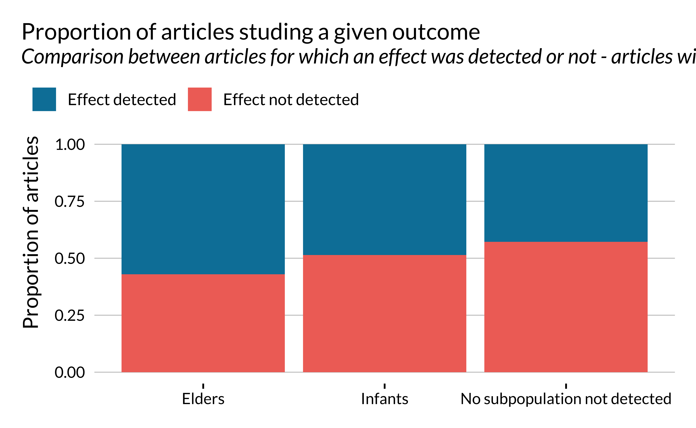
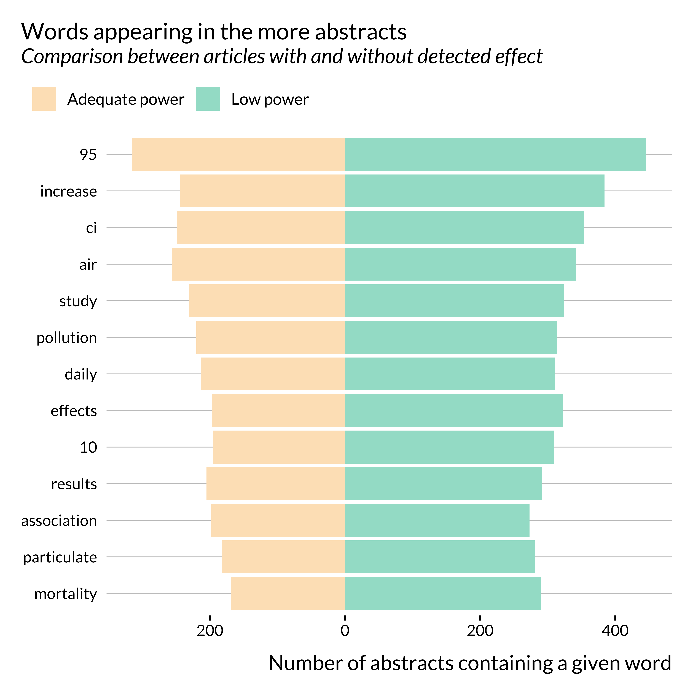
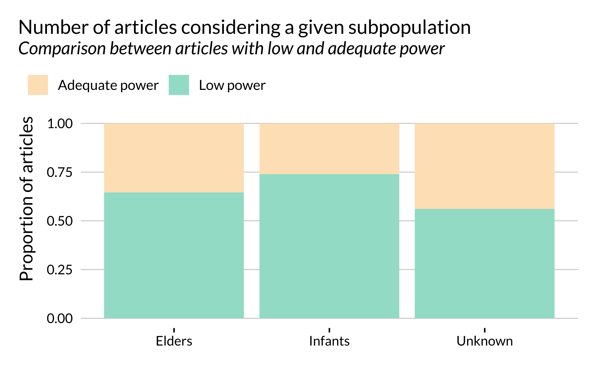
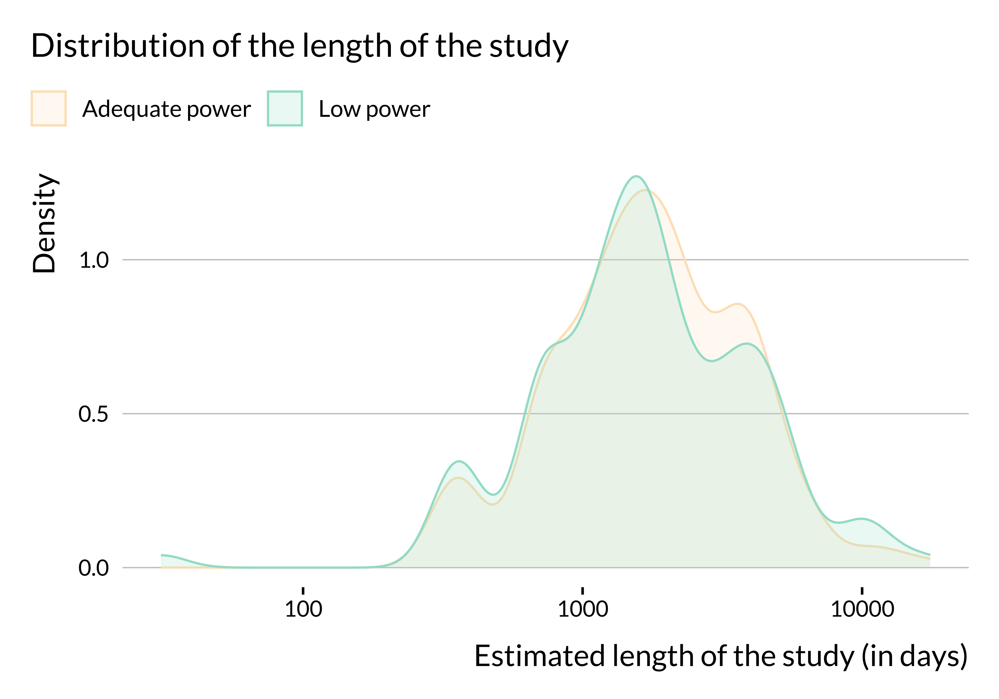

In this document, we carry out a retrospective power analysis to evaluate whether the literature on the short-term health effects of air pollution is prone to low power issues. Using REGular EXPressions (regex), we retrieved the estimates and confidence intervals displayed in the abstracts of relevant articles found in PubMed and Scopus (see this document for details on the procedure).
This notebook is organized as follows:
- We first explore the characteristics of the articles retrieved.
- Since we only retrieve effects for a subset of papers (i.e., those that displayed point estimates and confidence intervals in the abstract), we assess whether these papers are representative of the whole literature.
- We then explore the effects retrieved before carrying out the retrospective power analysis.
- We finally explore potential sources of heterogeneity in low power issues.
Articles Characteristics
We retrieved the articles from PubMed and Scopus using the following query on May 18, 2021:
TITLE((air pollution OR air quality OR particulate matter OR ozone OR nitrogen dioxide OR sulfur dioxide OR PM10 OR PM2.5 OR carbon dioxide OR carbon monoxide) AND (emergency OR mortality OR stroke OR cerebrovascular OR cardiovascular OR death OR hospitalization) AND NOT (long term OR long-term)) AND short term
This query enables us to retrieve 1834 abstracts.
Themes
We display the main themes of the articles using a wordcloud:

And we display the list of words the most frequently used:
Detection of Effects
Out of the 1834 articles returned by the query, only a fraction reports estimates and confidence intervals in their abstracts. This might create some selection, making the sample of articles studied not representative of the whole literature. We investigate further the difference between articles that do and do not report confidence intervals in their abstracts in the following section.
We detect 2666 effects and associated confidence intervals. We retrieve estimates for most of the articles mentioning confidence interval in some forms in the abstract:
| Effect retreived | Number of articles | Proportion (%) |
|---|---|---|
| Yes | 784 | 88 |
| No | 110 | 12 |
Note that some abstracts contain the phrase CI without actually displaying effects and confidence intervals. Our algorithm seems to make a reasonably good job at detecting effects and CI when they are indeed displayed in an abstract. In addition, there is no reason to think that our ability to detect an effect would be correlated with power issues in the paper. Hence, we feel rather confident assuming that our detection algorithm selects a random (along our dimension of interest) sample of estimates among all estimates displayed in abstracts.
However, the initial query also returned articles that do not correspond to the type of papers we want to study. For instance, some articles look at the impact of air pollution on animal health. Other articles returned by the query are actually studying long term effects. We therefore skimmed through all the titles and abstracts for which an effect was retrieved and created a dummy variable describing whether these articles should be included in the analysis or not.
| Valid article | Number of articles | Proportion (%) |
|---|---|---|
| Yes | 668 | 82 |
| No | 147 | 18 |
We therefore manually filter out 18.0368098% of the articles for which we retrieved an effect.
Overall, our corpus is composed of 668 articles for which we detect 2155 estimates.
Here is the list of the valid articles.
Representativity of Articles for which an Effect was Retrieved
In this subsection, we investigate whether there are systematic differences between articles for which we retrieved an effect and articles that do not display an effect in their abstract or for which we did not detect one. We build this analysis such that it also provides general information about the entire set of articles.
Note that we manually selected articles that correspond to the type of articles we are interested in this study, i.e., those investigating the short-term health effect of air pollution, only from the sample of articles for which we detected an effect. Hence, for articles where no effect was detected, we did not perform the manual filtering. In this section, we consider the full set of articles, which includes articles that we end up manually filtering out. The fact that the set of articles considered here is larger than the final set is not problematic because the present section mainly aims to evaluate the quality of our detection algorithm. We do not expect the algorithm to perform widely differently for articles that look at similar but slightly different questions than ours.
Qualitative Analysis
We skim through abstracts for which we retrieve an effect or not to see whether there are clear differences across study subsets.
First of all, we notice that we did not select some papers displaying effects in their abstracts because they do not mention confidence intervals. We need standard errors to compute power, type M and type S error, hence why we did not select these papers. A small part of them seem to however mention p-values. We could have build on this to increase slightly our set of articles considered but it would not have drastically increased the set of articles considered. As discussed previously, we also acknowledge that our algorithm fails to detect a small share of otherwise valid estimates.
We then noticed that a non-negligible share of articles for which we do not detect an effect seem to to be off-topic. Our quick exploration did not show evidence of such an issue in articles for which we detected an effect. This is rather reassuring; we are filtering out not well-suited papers.
Finally, part of the studies for which we do not detect an effect are meta-analyses (based on a quick regex search, there are about twice has much metanalyses in articles with an effect).
Publication date
Getting back to our automated analysis, we first look into the distribution of published articles on this topic in time. We also wonder whether displaying effects in the abstract was a particular feature of a given period.
First, we notice that the number of articles published on short-term health effects of air pollution has been increasing rather strongly since the 1980s. The first article for which an effect is detected was published in 1992. We only found 12 articles published before 1992. This can be explained by the fact that, in most places, air pollution has only been measured consistently since the 1990s.
Even though there are slightly more recent (2010-2020) articles for which effects are retrieved, the difference does not seem to be substantial. Distributions of articles for which an effect has been retrieved and not are rather similar.
Journal and Fields
We then look into the journals and academic fields in which articles on short term health effect of air pollution have been published. The results by journals are rather messy so we focus on journal areas and subareas.
Most papers on this topic have been published in multidisciplinary journals or health science journals.
One may notice that effects are not retrieved, i.e., not reported in the abstract or not detected, for most papers published in life science and social sciences and humanities. This is probably due to reporting practices peculiar to these fields. This might not be as problematic as they constitute a small share of the sample. There does not seem to be a particularly large imbalance in terms of journal general field for the more represented fields.
Themes
We then wonder if the words used in each sets of abstracts differ between the two sets of articles.
Apart from a few key terms, such as CI, 95 for instance, there are no huge differences in the terms used in both subsets of abstracts. Noticeably, the term increase seems to appear more in abstracts where we detect an effect. This is not surprising as these papers often use sentences similar to a 10 \(\mu g/m^{3}\) increase in PM\(_{10}\) concentration is associated with .
Pollutant
We then look at the pollutants considered in each article. We consider that a pollutant is studied if it is mentioned in the abstract. It is not an exact measure as some articles may mention pollutants without actually studying them but it remains an interesting metric.
First of all, we notice that a large share of papers considered here study particulate matters (PM2.5, PM10 or both).
It seems that, when the number of papers sudying a given pollutant is large, the likelihood of detecting an effect does not seem to vary much with the type of pollutant. Importantly, the proportion of effects retrieved is much lower for articles for which we are not able to detect the type of pollutants studied.
Outcomes
As for pollutants, for some articles, we were able to retrieve studied outcomes depending on the words used in an abstract. We classified them into two categories: mortality and emergency.
Most articles studied here are interested in mortality. The proportion of articles for which an effect is retrieved seems to be larger for papers studying emergency admissions than mortality. There might therefore be some kind of selection issue along this dimension.
Subpopulations
Some articles focus on sub-populations such as infants or elders. When these terms are not mentioned, either the entire population is considered or we are not able to detect the subgroup considered. The number of articles for which a subpopulation is indicated is rather small:
| Subpopulation indicated | Number of articles |
|---|---|
| Yes | 238 |
| No or unknown | 1596 |
Looking more in details into the detection of effects, we get the following pattern:

There does not seem to be large variations in the proportion of articles for which an effect is detected, depending on whether a subpopulation is studied or not. Yet, this proportion is a slightly larger for elders than infants, itself larger than when when no subpopulation is detected.
Number of observations
We then look at the number of observations, the length of the the study period and the number of cities considered. Importantly, we only retrieve this information for a very limited subset of articles.
| Missing | Length of the study | Number of cities | Number of observations |
|---|---|---|---|
| False | 630 | 832 | 375 |
| True | 1204 | 1002 | 1459 |
Our analysis is therefore to be taken with caution as there is a critical lack of information for this category.
We notice that there are large variations in the number of observations in the studies considered. However, there does not seem to be large differences along this dimension on whether an effect is retrieved or not. There seems however to be more studies around 1000 observations and less between 10,000 and 100,000 in articles for which an effect is retrieved. This is explained by the fact effects are retrieved more for studies with rather limited study period (around 3 years).
Summary
The articles for which an effect was detected, unsurprisingly, seem to be slightly different from those for which we did not detect one, based on our quick qualitative analysis. Yet, there does not seem to be important divides along the dimensions studied.
We can thus now dig further into the analysis of the estimates retrieved.
Analysis of the Effects
In this section, we briefly analyze the effects retrieved, their statistical significance and their precision.
Significance
First, we notice that most of the effects retrieved here are significant (at the usual 5% threshold).
| Significant | Number of effects | Proportion |
|---|---|---|
| No | 173 | 0.0802784 |
| Yes | 1982 | 0.9197216 |
Researchers mention their key findings in the abstract and therefore probably do not report in their abstracts non statistically significant estimates for which the null hypothesis of no effect cannot be rejected. Only a very small proportion of articles do not report any statistically significant estimates in their abstract:
| At least one significant estimate | Number of articles | Proportion |
|---|---|---|
| No | 10 | 0.0149701 |
| Yes | 658 | 0.9850299 |
t-Statistics
We then look into the distribution of the t-scores.
There seems to be some sort of bunching for t-scores above 1.96. In this analysis, we only consider estimates reported in the abstracts. Authors may only report significant estimates in their abstracts even though they also report non significant estimates in the body of the article. This might explain this bunching. We need to investigate this further in order to understand whether this bunching is evidence of publication bias. To do so, we could reproduce the present analysis but analyze the full texts and not only on the abstracts. Other techniques could be used to analyze reporting bias but are not available to us, considering the lack on information we have access to using this automated method.
Signal to noise ratio
We then plot the distribution of the signal to noise ratio, ie the ratio of the point estimate and the width of the confidence interval.
The graph is of course analogous to the previous one. It however underlines that in a large share of the studies, the magnitude of the noise is larger than the magnitude of the effect. We then look into the distribution of the signal to noise ratio in more details.
| Signal to noise ratio | Percentage of estimates with a lower signal to noise ratio |
|---|---|
| 0.00 | 0% |
| 0.51 | 10% |
| 0.60 | 20% |
| 0.69 | 30% |
| 0.83 | 40% |
| 1.02 | 50% |
| 1.38 | 60% |
| 2.46 | 70% |
| 47.57 | 80% |
| 70.65 | 90% |
| 33166.67 | 100% |
We notice that for about 55% of the estimates considered here, the magnitude of the noise is more important than those of the signal. This is particularly concerning.
Retrospective Power analysis
We then turn to the power analysis itself. The objective is to evaluate the power, type M and type S errors for each estimate.
To compute these values, we would need to know the true effect size. Yet, true effects are of course unknown. One solution could be to use estimates from the literature and meta-analyses as best guesses for these true values. Yet, in the setting of this automated literature review, detecting what is exactly measured in each analysis is particularly challenging since there is no standardized way of reporting the results beyond mentioning confidence intervals. One study may for instance claim that a 10 \(\mu g/m^{3}\) increase in PM2.5 concentration is associated with an increase of x% in hospital admissions over the course of a day while another study may state that a 2% increase in ozone concentration increases the number of deaths by 3 over a month. Fortunately, for each estimate retrieved, even though we do not know what is measured, we can evaluate the precision with which it is estimated.
To circumvent the fact that we do not know the actual effect size, we follow a strategy suggested by Gelman and Carlin (2014). We consider a range of potential true effect sizes and run a sensitivity analysis. We investigate what would be the power, type M and type S error if the true effect was only a fraction of the measured effect. This enables us to assess whether the design of the study would be good enough to detect a smaller effect. If assuming that the true effect is half of the measured effect yields a power of 30%, there is probably a major issue with the design of this study. With this design, this (non zero) effect would only be detected 30% of the time.
Of course, there is no reason to think a priori that a given effect would be overestimated. The values for power, type M and type S errors are therefore only informative.
To carry out the analysis, we use the package retrodesign which computes post analysis design calculations (power, type M and type S errors). We run the function retro_desing() for several effect sizes.
In a first part, we investigate whether the literature might be subject to design issues. We analyze the distribution of power, type M and type S errors in the whole set of abstracts, how they evolve jointly or along several variables such as the size of the true effect. We find clear evidence of heterogeneity across articles. Some of them seem to present robust designs while others seem much more problematic, yielding low power and high rates of type M error, even for large hypothesized true effect sizes.
We then compute and plot power and exaggeration curves. They represent the statistical power and exaggeration ratio of each study against hypothetical true effect sizes defined as a fraction of the observed estimates.
The summary statistics when the true effect is half of the estimates are:
| Metric | Min | First Quartile | Mean | Median | Third Quartile | Maximum |
|---|---|---|---|---|---|---|
| Exaggeration Ratio | 1.0 | 1.0 | 1.5 | 1.3 | 1.9 | 2.5 |
| Statistical Power (%) | 16.5 | 28.1 | 62.6 | 60.3 | 100.0 | 100.0 |
| Type S Error (%) | 0.0 | 0.0 | 0.1 | 0.0 | 0.1 | 1.0 |
Summary
If the true effects of studies were equal to half of the estimates, half of the literature would overestimate effect sizes by a factor of at least 1.5. A quarter of the literature would overestimate the true effect sizes by 1.9. We need to investigate further into the sources of this heterogeneity.
Analysis of the sources of heterogeneity
We then investigate potential sources of heterogeneity.
To simplify and clarify our analysis, we consider that an estimate has low power if its computed power is lower than 80% if the true effect is half of the measured effect. These numbers are arbitrary. 80% is the threshold usually used in power analyses and half is purely arbitrary and could be changed easily in a robustness check. Following this criterion, the number and proportion of estimates with low power is as follows:
| Power | Number of estimates | Proportion |
|---|---|---|
| Adequate power | 841 | 42 |
| Low power | 1141 | 58 |
Based this criterion, the number of studies with low power is concernedly high.
Such articles are also associated with large type M errors:
| Power | Mean type M | Median type M |
|---|---|---|
| Adequate power | 1.01 | 1.00 |
| Low power | 1.79 | 1.77 |
We investigate the particularities of articles with seemingly low power. We basically reproduce the same analyses as the ones used to compare articles for which we retrieved an effect or not.
Publication date
First, we look into the evolution of the proportion of articles with low power with publication dates.

The proportion of articles with low power does not seem to have drastically evolved after the 1990s. One may have expected that this proportion would have decreased in time as researchers have access to more and more data, computational power and as estimation methods improve.
We can also look more generally at how power, type M and type S error evolved in time.
There does not seem to be a clear trend in the evolution of power and type S error. However, type M error seems to increase slightly in time. This is rather concerning. One may potentially explain that by the fact that the literature is chasing smaller and smaller effects, leading to more type M error. This hypothesis is however difficult to verify since the effects we retrieved are not standardized, as mentioned previously.
Carrying out an analysis by quantile clearly shows that this evolution is driven by outliers with vary large type M errors. The yearly maximum type M error rates have increased in recent years.
Journal and fields
We then look into the distribution of articles in journals and fields. We filter out articles from life sciences and social sciences & humanities journals since only a very limited number of articles have been published in such journals.
It seems that articles published in health sciences journals are less prone to power issues than articles published in other type_s of journals. This is somehow confirmed when looking at more precise subjects: the proportion of articles displaying low power is much lower in medicine journals than in environment and chemistry journals.
Some of the heterogeneity may come from the leniency of the journals with regards to these issues. Interestingly, not many fields have a very low rate of articles with low power. This might reveal an across the board lack of awareness of power issues. Yet, while our knowledge of the medicine literature is extremely limited, we seem to remember that, when applying for randomized experiments, researchers in medicine have to perform power calculations in order to properly design their study. Some of them therefore pay carefull attention to power issues and this might explain the lower rate of articles with low power in such journals.
Themes
We then investigate whether the themes appearing in the abstracts are different in articles with adequate or low power.

There does not seem to be a clear difference in the terms used in abstracts for articles with low and adequate power. The only noticeable difference, not visible in this graph, is the use of the term relative. Articles with low power mention it much less that articles with adequate power. This difference is rather unclear.
Pollutant
We also look into potential disparities in terms of pollutant:
There does not seem to be stark differences by pollutant type. While some differences seem to appear for BC and Air Quality Index, these pollutants are only studied in a limited sample of studies.
Outcome
We then compare the power as a function of the outcome studied (mortality or hospital admissions).
There does not seem to be any heterogeneity along this dimension.
Subpopulation
We then turn to the sub-population studied.

There does not seem to be stark variations along this dimension either.
Number of observations
Finally, we explore the link between power and the number of observations. Remember that, for a lot of articles, we were not able to recover information about the number of observations (number of cities or length of the study). Hence, these results are purely suggestive.

There does not seem to be substantial heterogeneity in terms of number of observations or length of the study period (at least in articles for which we were able to retrieve this information). We may not observe any difference in terms of number of observations because we do not have this information for many studies. We have retrieved more data about the number of cities considered and it seems that more studies with low power only consider one city. The data are imperfect but this result may come from the fact that estimates from studies focusing on one city are likely to be less precise than those from studies focusing on several cities. This would be due to a smaller number of observations.
Summary
We have seem that mean and median power do not seem to have greatly evolved in time but the average type M seems to have increased in time. This pattern seems to be driven by the fact that more and more papers with very large type M errors have been published recently. We have also seen that health science journals seem to be more prone to power issues than other journals. However, there seems to be a shared lack of concern for low power issues across all fields. Finally, we did not find evidence of obvious heterogeneity in outcome, pollutant or sub-population studied but noticed that more studies with low power only seem to be considering only one city.